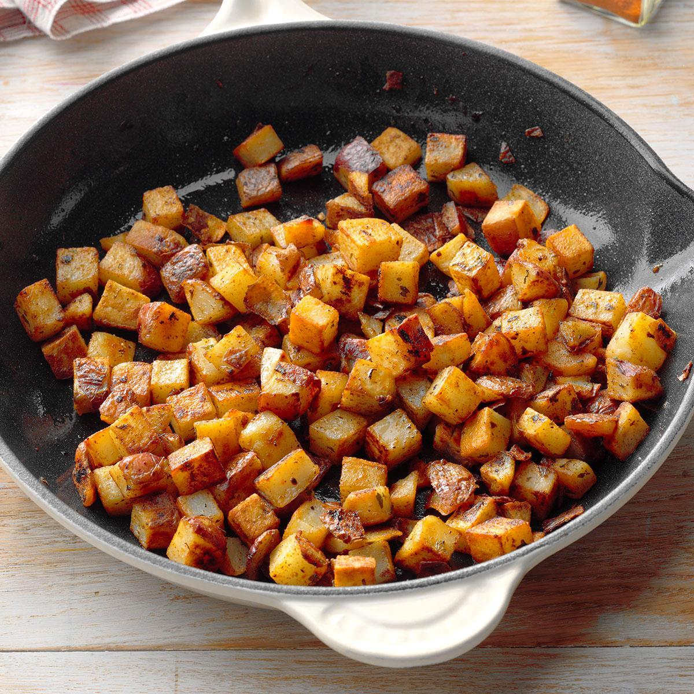

Spicy Potatoes Recipe

Homepage
Description
A versatile and tasty dish, these potatoes can serve as a tasteful side
to an evening dinner or as a wonderful way to start the morning as a
breakfast
Ingredients
- 4 Potatoes peeled and chopped
- 3 Spoons each of olive oil and butter
- Spices: Salt, Pepper, Basil, Chilli Flakes
Steps
- Heat a not stick pan, add oil and butter to the pan
- When melted add potatoes, let it cook until golden
- add spices while the potatoes are cooking, check if a fork
easily goes through a potato, if it does it the cooking is done